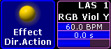

The following modes are explained by the example of the effect pool.
Example
Select fixtures.
Open the options of the effect pool and set the button below Frame Color to Normal Call.
Tap a pool object in the effect pool.
The effect object that was tapped is now applied to the fixtures that were previously selected.
The background of the pool objects in the pool stays unaffected (gray).
Fast Call
Fast call is used in all fixtures without selection and in all fixtures that were previously selected and that are assigned to a pool object.
Example
Open the options of the effect pool and tap the button Normal Call to toggle it to Fast Call.
Tap a pool object in the effect pool.
The effect object is instantly applied to all fixtures in the fixture sheet.
The background of the pool objects turns crimson.
Important:
Note that fast calling a template effect, triggers all fixtures in the fixture sheet. Fast calling a selective effect only triggers those that are set selectively for an object.
Pool Playback
Activates a temporary playback. The pool object turns into a mini executor.

Mini executor in the effect pool
Example
Open the options of the effect pool and tap Normal Call to toggle it to Pool Playback.
To toggle the mini executor between the states "on" or "off", tap Direct Action.
Direct Action is enabled and displayed below the name of the pool.